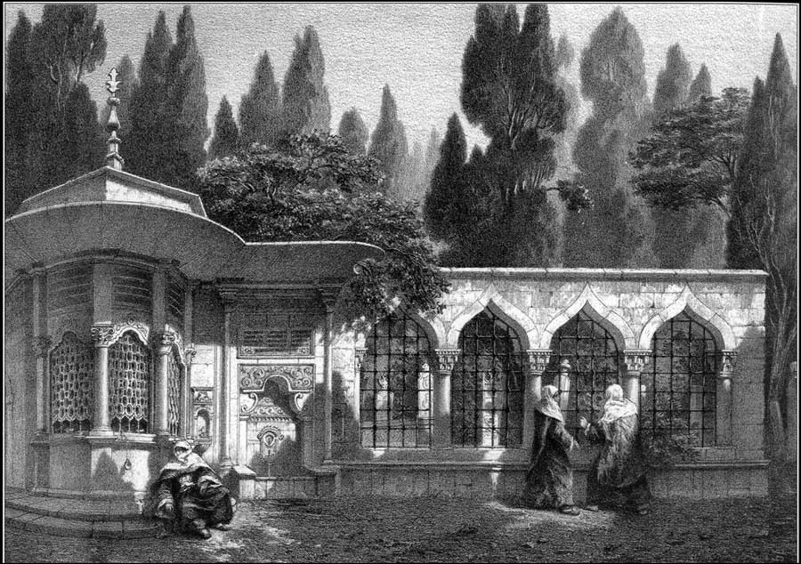
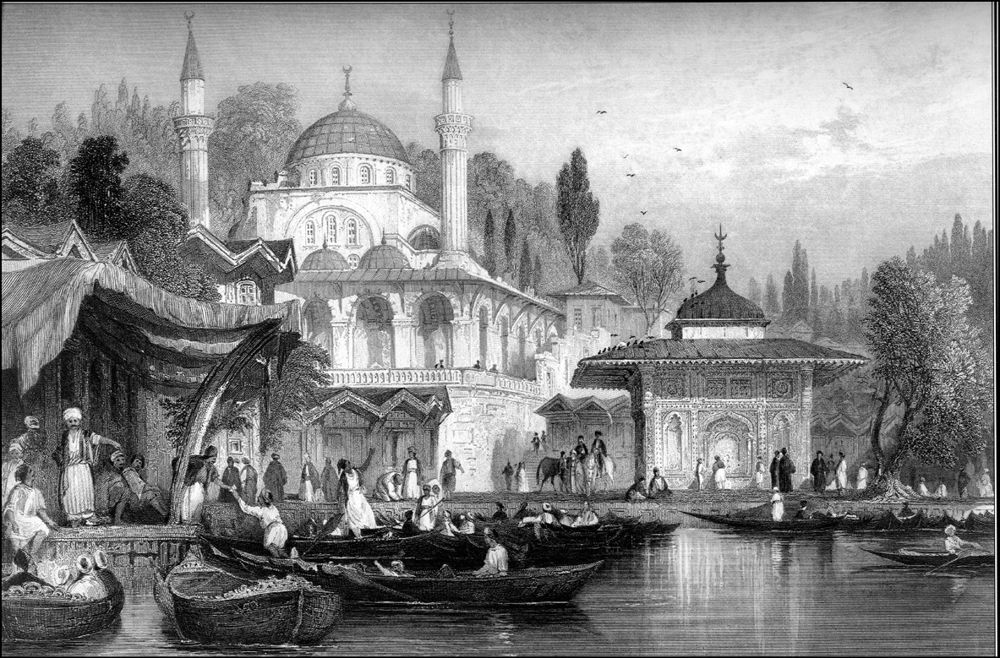
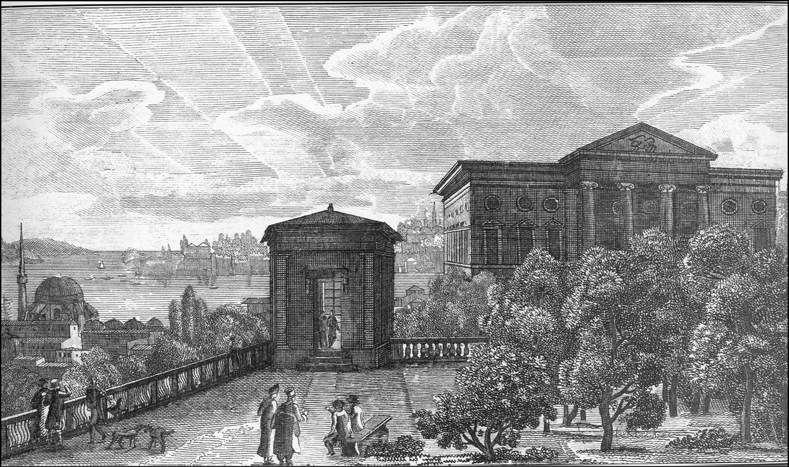

OSMANLI BAŞKENTİNDE BİR SEMT; ÜSKÜDAR
Üsküdar’a, eskiden Yunan, Hellen, Roma zamanlarında Hrisopolis (altın şehir) denirdi. Herhalde yanıbaşındaki Halkedon (Kadıköy) kadar kalabalık bir yerleşim değildi. İşin garip tarafı, İstanbul’da Türklerle meskûn ilk şehrin Üsküdar olmasıdır. Çünkü herkesin bildiği gibi daha Yıldırım Bayezid zamanında burası Osmanlı kontrolüne geçmiş bir araziydi. Fakat ilginç olan, Türkler fetihe kadar buradan hemen hiç çekilmemelerine rağmen, Bizans burada bir hükümranlık iddia ederdi. Bu garip alaşımlı, yani kimin idaresinde ve kimin hâkimiyeti altında olduğu belli olmayan şehirde, her iki unsur, yani bu taraftan gidip oraya yerleşenlerle şehrin yerlileri fevkalade iyi geçinirdi. Seyahatnameler öyle gösteriyor ki, Bertrandon de la Brocquière –ki 1430’larda geçti Osmanlı topraklarından– Üsküdar’dan İstanbul’a geçerken kayıkçılar karşıdan geliyorlar. Yani böyle gümrüksüz, tabii vizesiz bir uygulama var. En azından Bizans-Osmanlı ticareti ve alaşımı, bugünkü bizim Ortakpazar, Avrupa Birliği üyeleriyle yaşadıklarımızdan daha rahat ve daha canlı cereyan ediyor. Üsküdar, çok yanıltıcı bir isimdir. Ecnebi dillerde “Skutari” diye telaffuz edilir. Fakat aynı isim Arnavutluk’taki İşkodra için de kullanılır ve birtakım Osmanlı mühendisleri de Arnavutluk İşkodra’sından Arnavutluk Üsküdarı yahut sadece Üsküdar diye bahsederler. Binaenaleyh ikisini karıştırmayalım.
Üsküdar nedir? Bizim edebiyatımızın, İstanbul edebiyatımızın en canlı, en sevimli köşelerinden biridir. Bugün öyle eski zamanın Mihrimah Camii’nin arkasında, yeşillikler içinde ahşap konaklarla dolu, resim gibi şehri kalmamıştır elbette, ama her şeye rağmen İstanbul yarımadasının, Beyoğlu’nun, Boğaz kıyılarının hayhuyundan sonra Üsküdar çok çekici bir köşedir. İnsan başka bir ortama girdiğini görür; bu Osmanlı Türk motifidir. Mutfak ona göredir. Şu kadarını söyleyeyim: İstanbul’un gıda bakımından ve lokanta bakımından ister ayaküstü yiyin, ister oturun, ister ucuz olsun, ister pahalı bana göre en mutena semtidir. Yani Üsküdar halkı kötü yemez ve kolay beğenmez. O tecrübe etmiştir. Hakikaten İstanbul’un ara sıra gidilecek yeridir. Sahilden girdiğiniz vakit karşınıza Kanunî’nin kızı Mihrimah Sultan için ünlü mimarımızın, Koca Sinan’ın yaptığı cami çıkar.
Bu son derecede ilginç yapı Edirnekapı’daki Mihrimah Sultan Külliyesi içinde yer alan caminin eşi değildir, daha değişik bir tarz uygulanmıştır. Fakat şöyle bir durum ortaya çıkıyor: İster Avrupa tarafından gelip Edirnekapı’dan girin, isterseniz Anadolu’dan gelin, Mihrimah Sultan sizi karşılıyor. Hakikaten Üsküdar’da önünde koca bir meydan vardı, kervan yolunun başlangıcı oradaydı. Üsküdar’da kervanlar şöyle bir konaklarlar ve Mihrimah Sultan onları camiyle karşılar.

Üsküdar Karacaahmet Mezarlığı Çeşmesi. Eugene Flandrin.
Şehirde iki tane olan güzel eserlerden birisi de gene bu caminin önündeki III. Ahmed çeşmesidir. Nefis hattı vardır. Topkapı Sarayı önündeki III. Ahmed çeşmesiyle Mihrimah Sultan Camii’nin önündeki III. Ahmed çeşmesinin mimari bakımdan benzerliği varsa da, tabii aynı değiller. Daha da garibi, III. Ahmed çeşmesi çok yakın asırlarda 19. asırda, hatta 20. asır başlarında bile denizden neredeyse elle uzanılacak bir yerdedir. Bugünse meydan doldurulmuştur. Dolayısıyla o güzelim meydanın en önemli özelliği ortadan kalkmıştır. Karşı taraftan baktığınız zaman, caminin önünde, Şemsi Paşa’nın kuş konmaz denen camiine doğru ve diğer yanda da bugün motor iskelesinin bulunduğu tarafa doğru uzanan bir havuz görürdünüz. Bence İstanbul’un ve Türkiye’nin en büyük, en cana yakın havuzlarındandı bu, düşünebiliyor musunuz? İki kıtanın birbiriyle yaklaştığı yer sanki büyük bir barok havuz güzelliğinde.
Üsküdar sahilindeki bu camiler şehre bambaşka bir hava vermektedirler. Biraz öteye doğru gidersek Gülnuş Emetullah [Rabia] Sultan’ın yaptırdığı cami ile karşılaşırız. Osmanlı hanedanı ve tarihi içinde siyasî bakımdan hiç önemli olmasa da, ahalinin Avcı Sultan Mehmed dediği, Sultan IV. Mehmed’in gözdesi, en sevdiği eşi, çok uzun bir süre hasretliği olmuş ve ardından da Lale devri boyunca III. Ahmed ve II. Mustafa gibi önemli hükümdarların sarayında Valide Sultan olarak bulunmuştur. Biliyorsunuz, imparatorluk protokollerinde sadece padişah analarına Valide Sultan denir. Sultan unvanı verilir. Diğer padişah eşleri hanedandan olmadıkları için haliyle onlara sultan denmez. Sultan diye anılması için aslında valide olması lazımdır. Bu önemlidir.
Gülnuş Emetullah Sultan devlet işlerine karışmayan ve bilhassa kayınvalidesi Hatice Terhan Sultan tarafından da bu yolda yetiştirilen, Harem-i hümayunun sanatla, hayır işleriyle uğraşan son derece disiplinli, son derece güzel, saray adap ve erkânını bilen bir üyesidir. Bugün Gülnuş Emetullah Sultan’ın 18. asrın bir harikası sayılan camiinin haziresinde de türbesi yer almaktadır. O taşın üzerindeki adeta kırılmış gül, onun ölümünden dolayı duyulan hüznü ifade ediyor.

Mihrimah Sultan Külliyesi. Thomas Allom.
Sahilden girdiğimiz vakit, Koca Sinan’ın zevkini aksettiren, bir pandantif kutusu kadar zarif Şemsi Paşa Camii’ni görürüz. Buna “kuş konmaz” da denir. Demek ki rüzgâr orada çok hızlı estiği için martılar ve diğer kuşlar caminin minarelerine konamıyor. Bu küçük ama fevkalade sempatik ve insanı ta karşı sahilden esir eden klasik eserin arkasına, şöyle yüksekten baktığınız vakit Rum Mehmed Paşa’nın tipik bir 15. asır eseri olan, büyük ölçüde de Geç Paleologos devri mimarisinin izlerini taşıyan camiini görürüz.
Çok önemli bir devlet adamı olan Rum Mehmed Paşa hiç şüphesiz ki bizim tarihimizde devşirme paşaların iktidarı ele geçirmesini temsil ediyor. Bazılarının zannettiği gibi devşirmelerin Türklükten uzak, hain karakterli oldukları iddiasının ne kadar geçersiz olabileceğini de ispat ediyor. Çünkü Osmanlı bir imparatorluktur ve imparatorluk kendi insanlarını yetiştirir. Tesadüfe bırakmaz. Devşirme dediğimiz bu sistem (ki günümüzde son derece yanlış, üstelik bizim devlet geleneğimizi karalayan bir üslupla kullanılmaktadır. Çünkü merkezî ordu olan kapıkulu ocakları için devşirilen acemi oğlanların içinden en kabiliyetlileri de Enderun’a ayrılmak için devşiriliyor ve bu çocuklar o derecede iyi yetişiyorlar ki sarayda Osmanlı devlet protokolünde yer alıyorlar. Çoğunlukla kervan geçmez dağ köylerinden geldikleri için, geldikleri yerin lisanını ve dinî terbiyesini de unutuyorlar. Hatırlarında sadece geldikleri yerler, aileleri kalıyor. Sonradan isterlerse aileleriyle temasa da geçebiliyorlar. Tam Osmanlı oluyorlar. Müslüman oluyorlar ve bu konuda sadakatleri tamdır. Bazılarında görülen şahsî hırs veya yolsuzluk, bunlar tabii bütün bu sistemi kapsamaz) aslında bütün klasik imparatorluklarda görüldüğü gibi, Osmanlı’nın kendi yöneticisini, askerini yetiştirmesinin ifadesidir. Kontrasta bakınız. Bu Mehmed Paşa’yla aslında yerli bir hanedandan gelen Çandarlı Halil Paşa arasındaki, Çandarlılar arasındaki çekişmeyi düşününüz.
Sahildeki medreseye adını veren Şemsi Ahmed Paşa kimdir? Kastamonu hanedanından gelir. İsfendiyaroğullarından Kızıl Ahmed Bey’in torunudur, yani o da devşirme değildir. 16. asırda demek ki istisnalar vardı. Bazı tarihçiler Şemsi Ahmed Paşa’nın III. Murad’ı rüşvet almaya alıştırdığını ve devlet ağacının kökünü kemiren ilk kurt olduğunu söylerler. Adeta kendi hanedanının intikamını aldığını söyleyip, oğullarını Osmanlı’yı çürüttü diye suçlarlar. Bilinen o ki son derecede zeki adamdır.
16. asırda Avusturya ve İran’dan gelen sefaret erkânına son derecede itibar edilirdi. Bunlar çok iyi ağırlanır ve çok da tantanayla karşılanırdı. Mesela bir keresinde İran’dan bir elçilik heyeti kervanla Mihrimah Camii’nin önüne geliyor.
Şemsi Ahmed Paşa’nın arkasında o yeniçeri grubu solaklar, peykler sorguçlarıyla en pahalı kumaştan elbiselerle gelenleri karşılıyorlar. İran elçisi Mirzakulu Han son derece sivri dilli birisi. “Nedir efendim bu böyle gelin alayı gibi?” diyor. Cevap: “Bize değil sultanım, Çaldıran’dan gelen gelini karşılamışlardır.” Gördüğünüz gibi son derece hazırcevap ve 16. asrın yüksek zevkini taşıyan, kendi de bir hükümdar hanedanından gelen paşanın yaptırdığı cami de bir pandantif kadar zariftir.
Üsküdar’da biraz daha denize doğru, Marmara’ya doğru yürüdüğünüz takdirde, tepede III. Mustafa’nın Ayazma Camii denen camiyi görürüz. 18. asrın bu incisi, Mustafa’nın, padişahın adıyla anılıyor. Şehirde Laleli’yi o yaptırmış, o da onun adıyla anılıyor. Fatih Camii’ni zelzeleden sonra baştan aşağı tamir ettirmiş, tabii o da onun adıyla anılıyor. Buna da Ayazma diyorlar. Ayazma Camii’nin özelliği son derecede ilginç taştan kuş kafesleri olmasıdır. Ve avlusunda da –nadir görülecek şey– sarayın büyük zabitlerinin, silahdar ağaların ve diğer saray zabitlerinin mezarlarının yer almaktadır. Bu mezar taşlarının başlıkları son derecede ilginç ve nadidedir.
Üsküdar’da Kösem Sultan tarafından 1640’ta yaptırılan ve Çinili Cami denen cami ilginç bir tefekkür alanıdır. Genç Haseki 14 yaşında Sultan I. Ahmed’le tanışmış ve bu iki genç çocuğun aşkı gerçek bir Romeo-Juliet gibi, vuslattaki bir Romeo-Juliet gibi devam etmiştir. Sanatkâr padişahın, I. Ahmed’in erken ölümünden sonra Kösem Sultan’ın Eski Saray’a gitmesi ve oğlu IV. Murad tahta çıkınca genç bir valide olarak tekrar geri dönmesi hazin bir hikâyedir.
Ondan sonraki hayatı, icraatı ve huyu değişir. Bu meditasyon zamanlarını, Üsküdar’da Celvetiye tarikatının kurucusu ve padişahlar tarafından son derece de hürmet gören, eli öpülen Aziz Mahmud Hüdai’ye eskiden kocasıyla birlikte ziyaretini hatırlamış olmalıdır ki, Üsküdar onun için mukaddes bir anıya sahiptir.
Üsküdar’ın bir diğer valide camii, Nurbanu Sultan adına yapılmıştır ve Valide-i Atik Camii diye bilinir. Bu caminin külliyesinin bir kısmı Paşakapısı Cezaevi olarak kullanılmıştır, yanı başında da bir askeri rüştiye vardır. Muhafaza edilmiştir, restore edilmiştir. Valide-i Atik Camii çıkıp etrafın gezileceği, 16. asır mimarisinin ve çini sanatının zevkle seyredileceği bir camidir. “Zevkle seyredileceği”ni lafın gelişi söylüyoruz. Yoksa son zamanlarda bu caminin uğradığı felaket bizim için utanç verici olmalıdır. Evvela sanatı sevdiğini zannedenlerden birisi bu mihraptaki nefis 16. asır çini panoları hoyratça kırdırıp söktürmüş ve çaldırmıştır. Polisimiz kendisini yakaladıktan sonra geriye monte edilirken o güzellik maalesef kırık bir kalp gibi gözümüzün önündedir. Ne hikmetse gene bu camiye dadananlar, sözde sanatsever antika meraklıları caminin şamdanlarını çalmışlardır. Vatandaşlarımız, o mahallenin insanları bu eserlere sahip çıkmadığı taktirde hiçbir umut yoktur.
Üsküdar’ı Üsküdar yapan ve başlı başına gezilip görülecek bir semt haline getiren yerlerden birisi de çok geniş sahaya yayılan Karacaahmet Mezarlığı’dır. Karacaahmet’teki mezar taşlarını ve mezarlığı okumak, onların serpuşlarını seyretmek bir meşgale olmalıdır. Ne var ki burası da, mazideki kötü imar planları ve bazı müteahhitlerin toplayıp mıcır yapmaları yetmiyormuş gibi, maalesef hoyrat hırsızların çaldığı taşlarla da günden güne fakirleşiyor. Ne zaman aklımız başımıza gelecek diye soruyoruz.
Eski Üsküdar; valide sultanlar, haseki sultanlar, padişah kızlarının camileri ve bu üç dergah ve Karacaahmet Mezarlığı demektir. 18. yüzyılda Selimiye Kışlası inşa edildikten sonra Üsküdar dünyevileşmiştir. Hiç şüphesiz ki Üsküdar sınırını belirleyen 18. yüzyılda yapılmış Selimiye sadece Osmanlı İmparatorluğu’nda değil, bütün Avrupa’da örnek olacak bir yapıdır. Barok bir eserdir. Padişahın adını taşır ve Kırım Savaşı sırasında da hepinizin bildiği gibi hastane olarak kullanılmıştır. Florence Nightingale burada hizmet vermiştir. Daha sonraki devirlerde de hapishane de olmuştur. Ama bunların hepsini unutalım ve bu güzel eseri Boğaz’ın girişini, Marmara’yı süsleyen bir kütle olarak görelim. Gerçek anlamda askerî mimari Türkiye’de ölmemiştir ve devamlı yaşamaktadır.
Üsküdar tarihi eserleriyle, dokusuyla İstanbul’un az bilinen ama çok daha iyi bilinmesi, korunması, etüt edilmesi gereken bir semtidir.
Üsküdar, dergâhlarıyla da ünlüdür. Sultantepe’deki Özbekler Tekkesi şehirdeki şeyhleri Buhara’dan gelen ve Orta Asyalı hacıların hac yolunda uğrayıp konakladıkları üç adet tekkeden en görkemlisidir. Özbekler Tekkesi mahalle sekenesinden olduğum için söylüyorum, huzur içinde oturulan bir mahal ve son yeşilliklerimizdendir.
Tabii ki Özbekler Tekkesi’nin asıl tarihi rolü mütareke dönemine aittir. Anadolu’daki kurtuluş mücadelesini destekleyen tekke ve şeyhleri İstanbul münevverlerinin sığındığı ve Anadolu’ya geçirildiği başlıca noktaydı. Bu gibi merkezlerin her biri eninde sonunda İngiliz işgal karargâhı tarafından basılıp dağıtıldığı halde Özbekler Tekkesi’nin bu önemli görevi sessizce götürmesi mensuplarının ne kadar ağzı sıkı, dikkatli ve etrafı tanıdıklarını gösterir.
Son zamanda İngiliz istihbaratı burayı keşfetmişse de kimseyi yakalamaya muvaffak olamamıştır. Tekke ve zaviyeler kapatıldıktan sonra da, şeyh Necmettin Efendi mutad günlerde şehrin musikişinasları ve edebiyat çevreleri ile burada toplayıp meclisler kurardı.
Tabii bizde konuşulanlar uçar, yazılı ve kalıcı hiçbir bilgi bulunmaz. Bugün tekkenin selamlık bölümünde Necmettin Efendi’nin çocukları yaşamaya devam ediyor. Doğrusu nadiren rastlaşsak da sohbetlerine doyum olmuyor. Özbekler Tekkesi İstanbul’un çevresiyle birlikte korunması gereken bir noktasıdır.
GEÇMİŞ ASIRLARDA BEYOĞLU VE FENERLİ BEYLER
Beyoğlu, Galata… 1970’lere kadar İstanbul’un üç önemli parçasından biriydi. Yani suriçi İstanbul, onun dışında Haliç civarında Eyüp, nihayet Bizans devrinde Pera denen Beyoğlu, Galata ve Üsküdar. Sonra İstanbul o kadar büyüdü ki, bilâd-ı selâse denen bu üç eski şehrin İstanbul’da esamesi okunmaz hale geldi. Ve günümüz İstanbul ahalisinin çoğu ne İstanbul’u, ne Eyüp’ü, ne de Üsküdar’ı çok iyi bilir. Ama Beyoğlu bugün bile bilinir. Çünkü ne olursa olsun Beyoğlu İstanbullunun kendini attığı bir semttir. Fakat işin garip tarafı, son senelerde İstanbul’a gelip yerleşen insanların çoğu ne İstanbul camilerini ne de Beyoğlu’nu biliyor.
Nedir Beyoğlu? Bizans devrinde Pera denirdi, bu “karşı” demektir. Şehrin hayatıyla, devletin bünyesiyle alakası olmayan, uzaktan gelme insanların yerleşip yaşadıkları yer, Pera olarak görülürdü. Bizanslı burayı sevmezdi. Tıpkı Osmanlı devrindeki İstanbullunun şüpheyle karşıladığı gibi... Denizaşırı yerden gelen Cenevizli, Venedikli, Güney İtalyalı, hatta İspanya’nın Katalonya’sından gelenler, şehrin bu kesiminde yerleşirlerdi. Pera’nın hâkim unsuru zaman içinde değişirdi. Bir ara Venediklilerdi. 1185’teki büyük bir kavgada kentin asıl halkıyla araları açıldığından şehir, yani Pera yağmalanmıştı. 1204’te bunun intikamını çok kötü aldılar. Bundan yaklaşık 800 sene evvel, 1204’te Dördüncü Haçlı Seferi’ni Kudüs’e değil, İstanbul’a yöneltmişlerdi. Latinler tarafından alınan şehir yağmalandı ve Venedik de Pera’nın efendisi oldu.
Bu efendilik 50 yıldan fazla sürmedi. İznik’e çekilen Bizans halkı ve hükümdarları şehri tekrar geri alınca onları Pera’dan attılar. Attılar da ne oldu? Kendileri mi yerleştiler? Hayır. İmtiyaz gene bir yabancı gruba, Cenevizlilere verildi. Bu böyle gidedurdu. Nihayet 1453’ten sonra da Beyoğlu yeniden düzenlendi. Artık ne Cenevizlilerindi, ne Venediklilerindi. Ama halen Batı Avrupa’dan, denizaşırı yerlerden, İtalya’dan gelen bir halk oturuyordu. Yerli Hıristiyanlar da yerleşmeye başlamıştı. Daha da ilginci, Kırım alındıktan sonra buradaki Karay, yani Yahudi mezhebinden olan Türkler de ahitnameyle buraya celb edildiler. 1492’den sonra da İspanya’dan, İtalya’dan sürülen Yahudiler ve hatta Müslümanlar da semtin bu kesiminde oturdular. Karaköy aslında Karayköy demektir. O cemaatin yanı başına İstanbul’a yeni gelen Müslüman İspanyol Araplar, Endülüslüler, İspanya Arapları diyorum ama Endülüslüler yerleşti. Hatta bölgenin en büyük kilisesi olan Dominiken ve Fransisken biraderlere ait olan kilise de onlara verildi. Bugün Arap Camii adıyla bilinen İtalyan Rönesans tipi bu yapı, Perşembe pazarının hemen kıyısındadır. Bir müddet sonra buradaki Musevilerin Hasköy’e doğru genişlediğini, orada da bir cemaat, bir koloni teşkil ettiklerini görüyoruz. Burada ünlü aileler vardı: Doryalar, Okardziler, Bothegeler, de Orlando, Adorna gibi aileler… Bunların bir kısmı asırlar boyu bu şehirde yaşadılar. Mesela sonunda Alman sefareti dragomanı, baş tercümanı olan Baron de Testa böyle bir soydan geliyordu.
Genellikle de Türklere değil, daha çok yabancı elçiliklere dragomanlık, tercümanlık göreviyle hizmet ederlerdi. Çünkü Bâbıâli’deki tercüme işlerini daha çok karşı yakada, Fener’de oturan, Fenerli Beyler dediğimiz eski Bizans aristokratlarının kalıntıları olan Hellenler görürlerdi. Pera kısa zamanda Batılı sefaretlerle doldu. 16. yüzyıla kadar bizde yerleşik elçilik sadece İtalyanlarınkiydi. Mesela Venediklilerin sarayı önce Bahçekapı’da, Aslanlı Ev denen, bugün yok olan bir binadır, daha sonra Fener’e yerleşmişti bunlar. O da biliyorsunuz 1980’lerdeki imar hareketleri sırasında yok oldu.
16. asırda Venediklilerin yerleştiği sefaret, Palazzo Venezia denen bina elan bütün haşmetiyle Beyoğlu’nda, Tomton Kaptan Sokağı’nda bulunmaktadır. Bunun da kendine göre çok acı bir hikâyesi vardır. Venedik Cumhuriyeti, Napolyon istilasıyla yıkılınca, 1804 Campoformio Antlaşması’yla bu bina Fransızlara verildi. Napolyon yenilince 1815 Viyana Antlaşması’ndan sonra Avusturyalılara verildi. Arada İtalya bağımsızlığını kazandı, Venedik onun bünyesine girdi ama sefaret Avusturya-Macaristan’ındı. Ve nitekim 1919 yılında İtalyanlar şehre çıktıkları vakit, burayı Avusturyalılardan haklı olarak geri aldılar. İçindeki Avusturya heyetini attılar. Bu tarihten itibaren İtalya İstanbul’da yapmakta olduğu sefaret binasına pek yerleşemedi ve elli yıl önce bize verdiler. Bugün Maçka Kız Sanat Teknik Enstitüsü’dür. Galiba gene mahiyeti değişti. İtalyanlar Tomton Kaptan Sokağı’ndaki bu binayı İstanbul’daki elçilik konağı olarak kullanıyorlar.
Şüphesiz ki enteresan bir şeyle karşı karşıyayız. Bir kere dünyanın her yerinde böyle liman şehirleri, yabancıların oturduğu liman şehirleri vardır. Çin’de vardır –Şanghay, Hong Kong gibi– Hind’de vardır. Eski Moskova’nın Slaboda’sı da böyle bir yerdir. Peki Pera’yı anlamlı kılan nedir? Burada sadece tüccarlar ve denizciler değil, aynı zamanda bütün sefaretler bulunurdu. Galiba şehre şıklığını kazandıran da buydu. Venedik Elçiliği’nin hemen yanında Fransa Elçiliği ve Tomtom Kaptan Sokağı’nın başında da Kapitülasyon Mahkemesi yer alır. Fransa Elçiliği’nin bulunduğu yerde daha evvel Polonya Sefareti vardı. Biraz ötede muhteşem Britanya Sarayı yer alır. Ve bu mıntıkada kendine yer bulamayan, geç kurulan Avrupa devletleri Belçika, Romanya, Yunanistan daha ötede elçiliklere sahipti. Alman Büyükelçiliği ancak Gümüşsuyu’nda kendine yer bulabilmişti. Japonya Büyükelçiliği ise Birinci Cihan Savaşı’ndan da sonra, mütareke bitip Cumhuriyet kurulduktan sonra nedense Ankara’ya değil, buraya açılmıştı. Ancak 1935’ten sonra Ankara’ya gittiler.
Bir yanda sefaretler, bir yanda liman aktiviteleri, öbür tarafta Osmanlı İmparatorluğu’nun iktisadî hayatını kontrol eden bankalar ve kuruluşlar, Banque Ottomane [Osmanlı Bankası] gibi, Commerciale Italiano gibi binalar, bilhassa Voyvoda Caddesi’nde, bugün Bankalar Caddesi denen yerde bulunmaktadır. İstanbul’da oturan veya burayla devamlı iş gören “levanten” dediğimiz kimi Fransız, kimi İtalyan, kimi Avusturya asıllı birtakım aileler burada zengin konaklara sahiptir. Amerikan Elçiliği’nin ve biraz ötedeki İngiltere Elçiliği’nin bulunduğu Pera bölgesinde, yani Pera Palas’ın bulunduğu sokakta bu binaları da görmek mümkündür.

Beyoğlu’nda Fransız Büyükelçiliği (Fransız Sarayı).
Öte taraftan da büyükelçiliklerin yakınında, başta Saint-Antoine gelmek üzere, Santa Maria Draperis, onun biraz ötesinde büyük Katolik kiliseler veya Kırım Kilisesi gibi Protestan kiliseler, katedraller bulunur. Ve Beyoğlu bunlarla birlikte Batı’dan ithal edilen küçüklü büyüklü malların satıldığı ünlü dükkânlar, sadece Pera Palas değil, ondan daha eski olan Büyük Londra Oteli veya Tokatlıyan gibi şehrin ilk modern otelleri, kafeler, patisseriler, kafe şantanlarla [café chantant] ayrı bir âlemdir. Buralara şüphesiz üçüncü sınıf truplar gelir Batı’dan, ama ara sıra birinci sınıf trupların ve artistlerin de geldiği olurdu. Nitekim İstanbul’u seven Sarah Bernhardt birkaç kere gelmişti. Ünlü besteci ve virtüoz Franz Lizst de gene İstanbul’u ziyaret edenlerdendi. Bunların arkası kesilmedi. Şehrin bu muhitinde oturan, yabancı dil bilen gruplar bilhassa bu gibi artist ve trupları davet ederlerdi. Ve gene yabancı basın ürünleri de burada satılırdı. Bir zamanlar İstanbul’da en çok Fransızca gazeteler okunurdu. Zamanla yerini başkalarına devrettiler.
İşte Beyoğlu… Niçin Beyoğlu dendiği bile belli değil. Acaba İtalyan Sefareti’nden ve orada bulunan aristokratlardan birinin “Bey oğlu” diye anılmasında mı ileri geliyor bu? Yoksa başka bir isim mi var? Bir yanda Galatasaray Lisesi 1860’larda burada hayata geçmiş Mekteb-i Sultani olarak, ama onun yerine daha evvel bir Galata saray mektebi, yani Enderun mekteplerinden birisinin olduğu bilinmektedir. İsmi Galata… Galata ne demektir? Süt mü demek? Acaba burada inek ahırları vardı, ondan mı öyle deniyordu? İsmi çok, ama hiçbir mananın kökünde bir aydınlık yok. Ama şurası belli bir şey: Pera, Osmanlı İmparatorluğu’nun Batı’ya, Batı hayat tarzına açılan kapısıydı. Ve buradaki eğlence, buradaki tüketim, buradaki yemek başka yerlerde görülmezdi. Buradaki hayat da başka yerlerde hoşgörülmezdi. O İstanbullu Türk’ün ancak kısmen uğradığı bir yerdi. Pahalı alışveriş yapmak için veya beylerin eğlenmek için geldikleri bir yerdi. Şüphesiz Beyoğlu’nda Batı kültürüne açık yerler de vardı. Kitaplıklar, kütüphaneler… Ama fazla nostaljiye dalmayalım. Bugünkü Beyoğlu Batı dünyasıyla çok daha fazla bağlantıda. Ve üstelik onun sakinleri, müşterileri, sevenleri de artık eskisi gibi Batı dünyasından gelenler, Levantenler veya onlara özenenler değil. Düpedüz İstanbullu Türkler. Hatta hafta sonu itibariyle Türkiye’nin her yerinden gelenler. Oradaki kitaplıklar artık onlara hizmet veriyor. Beyoğlu bugün hepsinden daha şaşaalı ve hepsinden çok daha fazla bu memleketin yaşamına ait bir bölge. Bunu unutmamamız gerekiyor.
Fetihten sonra yapılan ilk tahrire göre Pera surlarla çevrili bir bölgeydi. Bu surlar bugünkü Tophane’yi, Karaköy ve Perşembe Pazarı’nı içeriyor ve köşede de muhtemelen Tersane’de bitiyordu. Atatürk Köprüsü’nün başındaki Azapkapı, Azeb Camii, aslında tersane azeplerinin adıyla anılmasına rağmen banii, büyük sadrazam Sokollu Mehmed Paşa’ydı. Ve mimarı da herkesin ilk bakışta üslubundan kavrayacağı gibi Mimar Koca Sinan idi. Bu bölge yukarıda Şişhane’ye kadar uzanır. Şişhane bugün Altıncı Daire-i Belediye binasıyla tanınıyor. Kısaca Beyoğlu Belediye Binası dediğimiz bu bina, Osmanlı İmparatorluğu’nun Batı’ya özenilerek yapılmış ilk belediye binası, hatta ilk önemli belediye teşkilatı binasıdır. İsmi de düpedüz bir özentiydi, çünkü coğrafî sıralamada buranın altıncılıkla alakası olmadığı halde, tamamen Paris’teki şık Altıncı Bölge dolayısıyla bu isim verilmişti. Büyükhendek Caddesi de zaten şehrin surlarının buradan geçtiğini gösteriyor.
Beyoğlu’nda fetihten hemen sonra yapılan tahrirde Ermeni, Rum ve Yahudi nüfusun yanında İtalya’dan, Sicilya’dan, Avrupa’dan gelenler de göze çarpıyor. “Latin” dediğimiz bu millet aslında bir millet değil, bir taife idi. Ve bunlar bir hukukçuyla Bâbıâli nezdinde temsil edilirdi. Gene 16. asırda ilk önemli sefaretler de İtalyanların yanında, buralardan gelmektedir. Yani Avusturya dediğimiz, mukaddes Roma-Germen İmparatorluğu’nun temsilcisi ve Fransa Kralının temsilcisi burada, büyük kilisedeki loncada oturma imtiyazı yüzünden adeta çamaşırcılar gibi kavga etmişlerdi. Bu gibi ilginç olayları Pera’nın yerli halkı sadece gülerek seyrederdi. Nitekim sadrazam bu kavgayı önlemek için kilisenin kapılarını Pazar günü kapattırmış, Doktor Peysen bundan haberdar olduğu için gelmemiş, Fransız ise gelip kapıları yumruklamış ve rezalet çıkarmış. Herhalde 16. yüzyılın Pera’sı bu gibi olaylarla gününü gün ediyordu. Veya İngiltere Kraliçesi Elizabeth’in bize ilk gönderdiği elçi Edward Barton, kendi kiraladığı evde, ki muhtemelen Tophane’nin üstündeydi bu, gürültülü, sazlı sözlü, çengili eğlenceler tertiplediğinden dolayı, komşular tarafından şikâyet edilmiş ve ahlâkî gerekçelerle evinden atılmış.
O tarihte Osmanlı başkentinde hiç şüphesiz ileride 1815 Viyana Antlaşması’nın getireceği diplomatik muafiyet hükümleri uygulanmıyordu. Pera’daki sefaretlerin her birinin kendi fırını ve kendi şarap depoları vardı. Bu şarapları da vergisiyle alıyorlardı. Ancak 1699 Karlofça Barışı’ndan sonra Vestfalya Antlaşması hükümlerine göre diplomatik misyonların vergisiz mal alma hakkı doğdu. Birçok kilisede İtalyanca ve Fransızca ibadet ediyorlardı. Bunların yerli Hıristiyanlarla alakası yoktu. Bugün bu kiliselerde Türkçe ibadet bile başlamıştır. Çünkü İstanbul’un Levanten halkı artık İtalyanca ve Fransızcayı unutmakta, Türkçeye dönmektedir. 19. yüzyıla kadar Pera bir yabancı şehirdi. Bu yabancı şehri biz hoş görüyorduk. Hâlbuki Lamartine Fransa taşrası diyor. Bir Osmanlı tarihçisi ise günümüzde insanların büyük hayranlıkla gezdiği Grand Rue du Pera, Cadde-i Kebir ya da bugünkü adıyla İstiklal Caddesi’ni, bakın nasıl tarif ediyor: “sakinlerinin kartvizitleri kadar manasız uzunlukta ve beyinleri kadar dar bir cadde…” Sakinlerinin kartvizitleri derken, kartvizitlerini hakikaten yerli yersiz birtakım unvanlarla süslemeyi seven Levanten ahaliyi kastetmektedir.
İstanbul Avrupalılığı hiç ilginç görünmemektedir. Kimlere? Avrupalılara. Oysa Osmanlı halkı için çok ilginçtir. Ne de olsa değişiklik kapısıdır. Değişiklik toplumların en masum isteğidir. Ama her zaman için en güzel ve doğru biçimde tecelli ettiği söylenemez. 1960’lardan itibaren hem Avrupa’dan, bilhassa İtalya’dan gelen cemaatin erimesi, karışık evlilik veya göç dolayısıyla, hem de yerli Hıristiyanların azalması dolayısıyla Beyoğlu bir çöküntü yaşadı. Bu çöküntü ilk anda Anadolu’dan göç edenlerin yerleşmesi ve Pera’nın kendine özgü eski renkliliğini kaybetmesi şeklinde görüldü. Mamafih şehrin imkânları ve coğrafyası cömert davrandı. Aradan 40 sene geçmeden Beyoğlu yeniden canlandı. Sanat galerileriyle, kitapçılarla doldu. Ve bugün için artık oradaki emlak da pahalılaşmaya başlamıştır. İstanbul’un kendi aydınları, kendi zenginleri kadar dışarıdan da gelenler oraya yerleşiyor. Bu kozmopolitizmin sınırları da iyi tespit edilmeli ve ona göre kültür politikaları takip edilmeli… Aksi takdirde Beyoğlu bu sefer başka türlü bir yavanlığın içine girer.
* * *
Tarih okurken hep “Fenerli Beyler” diye bir zümreden söz edildiğini duyarız ve açıklaması hemen hiç yapılmamıştır. Okuldan sonra tarih okuyan az sayıdaki meraklılar Fenerli Beyler’den “İpsilanti, Mavrokordato, Aristarhi” gibi isimlere rastlar ama Türk tarih edebiyatında bunların ne olduğu üzerinde durulmaz. Gerçi, bunların Babıali tercümanları olduğunu biliriz. Ama Musahipzade Celal Bey gibi titiz bir tarihi tiyatro yazarının oyunlarında bile, Fenerli Beyler Fransızca tercümanlık yapar ve Rum şivesiyle Türkçe konuşurlar.
Bu bir hatadır ama daha vahimleri vardır; Fenerli Beyler’in hepsinin Bizans asilleri olduğu veya Yunan ayaklanmasını destekleyen hainler zümresini oluşturduğu tekrarlanır. Bir kısmı da onları Doğu Akdeniz Limanı’na yerleşen Batı Avrupalı ve Batı Akdenizli “Levanten” dediğimiz tüccar halkla karıştırır. Oysa Fenerli Rum Beyleri zümresi Osmanlı toplum sisteminin devraldığı beşeri coğrafya mirası ile ilginç bir uzlaşmasının ve Osmanlı devlet mekanizmasının ihtiyaca göre neler yaratabileceğinin bir kanıtıdır.
Fenerli Beyler, Rum Ortodoks cemaatine mensup bir aristokrasidir. Ama bu soyluluğun hukuki hiçbir temeli yoktur. Aileler ya devlet ya Patrikhane nezdinde üst görevlere gelmeyi bir teamül haline getirmişlerdir. Tabii buna uygun bir yaşam ve eğitim sistemini de üretmeyi başarmışlardır. Belirttiğim gibi Osmanlı toplumunda hükümdar hanedanı dışında hukukla temellendirilmiş, ırsi olarak imtiyaz kazanan hiçbir sınıf yoktur. Fenerli Beyler de bu imtiyazlı konumlarını muhafaza edebilmek için önce eğitime, sonra devletle iyi ilişki kurmaya dikkat ederlerdi.
İdeolojileri hiçbir şekilde milliyetçi değildir, devlete sadakattir ve bu sadakati abartarak gösterecek bir üslup ve kültürel davranış yaratmışlardır ki Osmanlı İmparatorluğu’nda Müslüman ulema hanedanlar dışında böyle kurumlaşmış bir yaşam ve davranış biçimi ancak Rum Ortodoks Fenerli Beyler ve Ermeni Gregoryan “amira” sınıfı için söz konusudur. Kendilerini Fener semtinin adıyla nitelendirmemize rağmen, bu yüksek zümre oraya hiç şüphe yok ki 17. yüzyıl başından itibaren Patrikhane’nin Fener’e taşınmasıyla birlikte gelip yerleşmiştir. Yoksa bu surdibi kıyı semtte Bizans devrinde Venedikli, Lübnanlı, Katalunyalı, Arap ve Türk tüccarlar yaşardı. Dolayısıyla bir bir yıktığımız Fener’deki taş Rum konakları, bazılarının sandığı gibi Bizans devrine ait değil, 17 ve 18. yüzyıl Osmanlı mimarisine ait eserlerdi.
Fenerli Bey aileleri içinde Argiropulo gibi, Mavrokordato gibi eski Doğu Roma Hellen soyluları kadar, Kantakuzenos gibi Arnavut asıllı Bizans hanedanları, Bogoridi gibi Bulgar asıllı ve Baltazzi gibi Rumen asıllı boyar reisleri veya zenginleşmiş tüccarlardan ve hatta daha ilginci; Petrasili ailesi gibi 1204 Haçlı istilasından kalan Latin kökenliler de vardır. Bunlara ünlü saray hekimi Mavroyeni Paşa’nın geldiği Napolili Morosini gibi İtalyanlar da ilave edilmiştir. Bu karmakarışık zümreyi birleştiren çimento, mensubu oldukları Rum-Ortodoks inancı ve kabul edilen Hellen kültürüdür.
Şu kadarını söyleyelim ki, İtalyan ve Batı Avrupa kültüründe Hellenizme bağlılık bağnazlık derecesinde değildi. Ama kendilerini yükselten Osmanlılık her şeyin önünde gelirdi. Londra Büyükelçimiz Kostaki Musurus Paşa’yı bu dünya görüşünden dolayı Atina elçiliği sırasında Yunanlı milliyetçiler öldürmeye kalktılar. Gerçi içlerinde ticaret ve armatörlükle zengin olanlardan birisi olan, İpsilanti ailesi gibi yerli milliyetçiliğe kapılanlar yüzünden Yunan ayaklanmasından sonra Fenerli Beyler kısmen gözden düştü ve yerlerini daha çok Ermenilere ve yükselen Arnavut Fraşeri ailesi veya bazı Türk memurlara bırakmaya başladılar. II. Abdülhamid devrinde Hıristiyan ve Müslüman Arap asıllı bürokratlar da bu kervana katıldı.
Fenerli Beyler’in çocukları İtalya’da Padua’da, sonra Fransa’da okurlardı ama asıl önemlisi devrin en seçkin hocalarından Türkçeyi en iyi biçimde öğrenirlerdi. Kozmopolit Osmanlı bürokrasisinin bütün adet ve üslubunu kavradıklarından çağdaş Yunan milliyetçiliğine karşı çok soğuk, hatta düşmanca davranırlardı. 19’uncu yüzyıl kültürü ve diplomasisi içinde Fenerli Beyler’in rolü bundan dolayı çok önemliydi; nitekim imparatorluk eridikten sonra ve bu ailelerin çoğu bugünkü Türkiye’yi terk ettikten sonra çocukları ve torunları Yunanistan’a değil Avrupa’ya yerleşmişlerdir. Daha ilginci, Avrupa’ya yerleşen bu Fenerlilerin çocukları Türkçeyle birlikte Yunancalarını da unutmuşlardır.